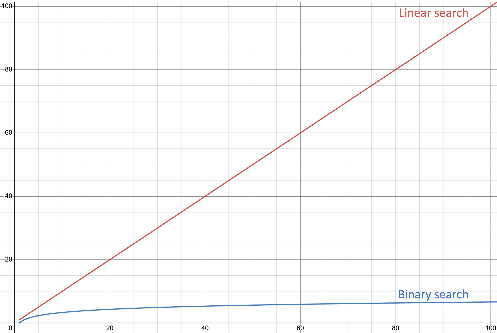

Table 1 shows the differences between linear search and binary search.
 Table 1
Table 1
| Linear Search | Binary Search | |
|---|---|---|
| Works on... | All lists | Sorted lists only |
| Efficiency | Less efficient | More efficient |
| Simplicity | Very simple | More complicated |
Graph 1 shows the maximum number of comparisons against the length of the list for binary and linear search (lower means more efficient).
 Graph 1
Graph 1

 How many comparisons would be needed to do a linear search on the list
How many comparisons would be needed to do a linear search on the list [11, 15, 25, 28, 36, 46, 49, 53, 65, 79, 80, 84, 89, 93, 97] for the number 89? How about for a binary search?
Tap/click to reveal 13 for linear search (because 89 is the 13th item in the list) and 4 for binary search (53, 84, 93, 89).